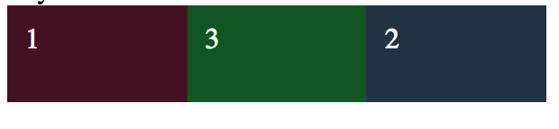
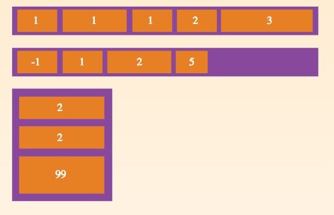
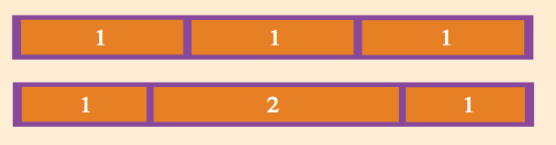

Jake LaCombe
HealtheIntent Infrastructure Frameworks
Good ol' days
Let's look at equal column height layouts

I am listed first in source order.
Pellentesque habitant morbi tristique senectus et netus et malesuada fames ac turpis egestas.
Pellentesque habitant morbi tristique senectus et netus et malesuada fames ac turpis egestas. Vestibulum tortor quam, feugiat vitae, ultricies eget, tempor sit amet, ante. Donec eu libero sit amet quam egestas semper. Aenean ultricies mi vitae est. Mauris placerat eleifend leo.
Pellentesque habitant morbi tristique senectus et netus et malesuada fames ac turpis egestas.
#one-true { overflow: hidden; }
#one-true .col {
width: 27%;
padding: 30px 3.15% 0;
float: left;
margin-bottom: -99999px;
padding-bottom: 99999px;
}
#one-true .col:nth-child(1) { margin-left: 33.3%; background: #ccc; }
#one-true .col:nth-child(2) { margin-left: -66.3%; background: #eee; }
#one-true .col:nth-child(3) { left: 0; background: #eee; }
#one-true p { margin-bottom: 30px; } /* Bottom padding on col is busy */
I am listed first in source order.
Pellentesque habitant morbi tristique senectus et netus et malesuada fames ac turpis egestas.
Pellentesque habitant morbi tristique senectus et netus et malesuada fames ac turpis egestas. Vestibulum tortor quam, feugiat vitae, ultricies eget, tempor sit amet, ante. Donec eu libero sit amet quam egestas semper. Aenean ultricies mi vitae est. Mauris placerat eleifend leo.
Pellentesque habitant morbi tristique senectus et netus et malesuada fames ac turpis egestas.
#one-true {
display: flex;
flex-direction: row;
}
#one-true .col { padding: 30px 3.15% 0; flex: 1; }
#one-true .col:nth-child(1) { background: #ccc; order: 2; }
#one-true .col:nth-child(2) { background: #eee; }
#one-true .col:nth-child(3) { background: #eee; order: 3;}
What is a flexbox?
Firefox Definition: Algorithm determining the position and the size of boxes based on the way they interact with their sibling and ancestor boxes
Easy Definition: A container that allows your elements to easily resize their width and height based on their container widths and relative siblings. No need to set widths or heights.
Cool Features
Easily switch diretion of the children
Switch element order on the fly (vertical or horizontal)
Coveted Text in middle of the element with ease.
Getting Started
.flex {
display: flex;
}
inline-flex is an option as well. It works just like inline-block.
Beginner actions
flex-direction: (row | column)
Determines the flow of the items inside the flex container.
order: (number)
Determines the ordering of elements. Works like reverse z-index.
Order goes by value of order on the item and compares that to siblings. (2 does not mean 2nd in order)
Basic Navbar
.navigation {
display: flex;
}
.main-links {
margin-left: auto;
}
.navigation a+a {
margin-left: 5px;
}
Footer on bottom of page
.navigation {
display: flex;
}
.main-links {
margin-left: auto;
}
.navigation a+a {
margin-left: 5px;
}
Footer at bottom of screen.
Interactive Example
Flex Properties
flex-grow: (number)
Defines how much space an element should grow. Higher numbers mean more space proportionality.

flex-shrink: (number)
Defines how much space an element should show. Higher numbers means it shrinks more. (Think reverse flex grow).
flex-basis: (number)
What is the base size of an item in a flex container. Note: This doesn't mean the item is always this size. It will shrink and grow if you have those values set.